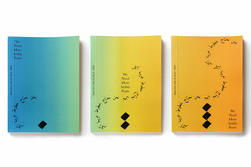
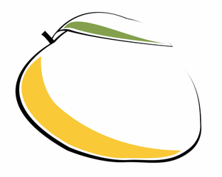
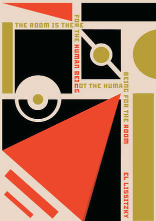
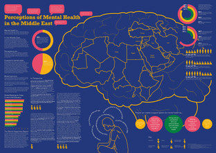
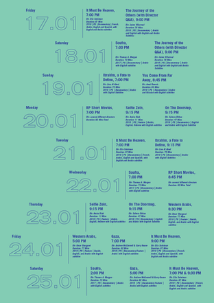
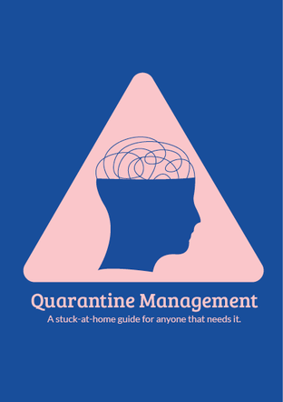
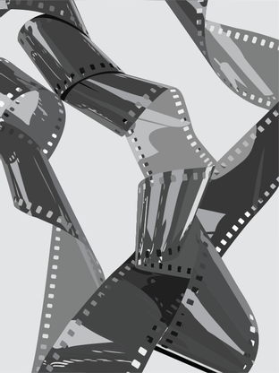
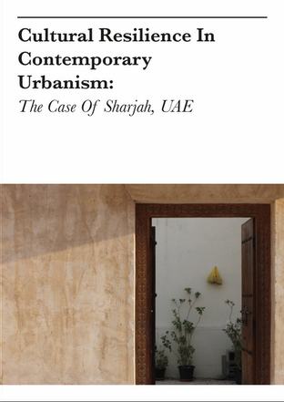

This project aimed to combine text and images to produce a series of three postcards that show a journey. The postcards show the journey of an artist who begins their journey by being curious about art; the artist then begins to discover new concepts, and then continuing to develop their skills and giving their work more depth.

This project consisted of reaching out to a type designer and interviewing them. After the interview, I designed a series of three covers, with the interview published in the first book of the series. I chose eL Seed, whose focus is calligraphy. The full publication can be
viewed here.

This was a warm up project that aimed to create two illustrations of any fruit: one stylized and one more realistic.

This project took a quote from a famous designer and created a poster that reflected the designer's style. The quote in this poster is from El Lissitzky, a Russian constructivist designer.

An infograph describing the perception of Mental Health in Middle Eastern countries. Mental health is an important aspect in our daily lives, but it isn't given as much attention as it should be. Coming from an Arab background, I was interested in exploring how mental health was seen and treated in the Middle East, and whether there were any improvements in its awareness. Details can be viewed here.

The Reel Palestine Film Festival is an independent film festival that shows Palestinian films. During the Fall 2019 Semester, the second year Visual Communication studio at AUS worked on rebranding Reel Palestine's campaign as well as managing their social media posts and designing marketing collaterals. The Festival took place in January 2020 along with an exhibit of the students' works and process towards the finalized campgain.

The project was to create a magazine about any topic using only two colors. Quarantine Management discusses ways to take care of your mental health during the Quarantine period of COVID-19 and how you can help yourself and the people around you. The full magazine can be
viewed here.

This project required illustrating film reels and Palestinian fabric as an exploration for the Reel Palestine exhibit.

An Editorial Publication on Cultural Resilience in the UAE done for the VIS 231 class in the Fall 2019 semester. This was a group project to take photos that match the article and every individual created their own publications for it. The full editorial can be viewed here.